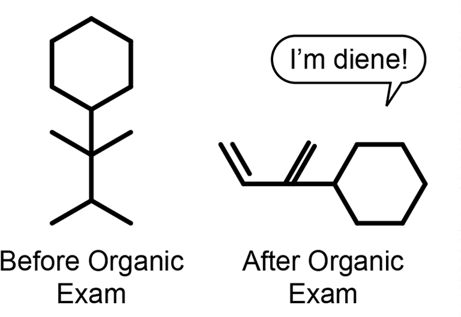
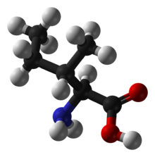
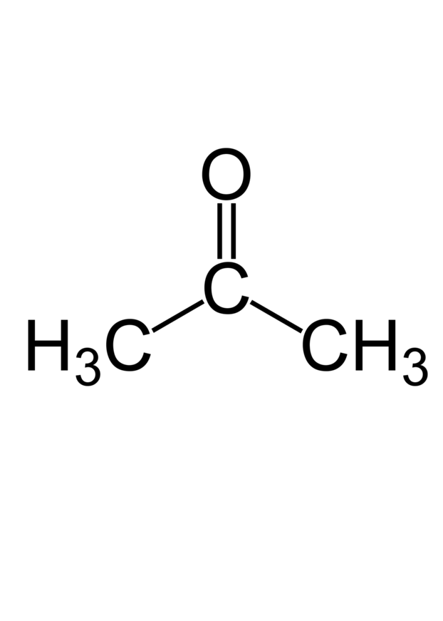

Organic chemistry is the study of the structure, properties, composition, reactions, and preparation of carbon-containing compounds, which include not only hydrocarbons but also compounds with any number of other elements, including Hydrogen (most compounds contain at least one carbon–hydrogen bond), Nitrogen, Oxygen, Halogens, Phosphorus, Silicon, and Sulfur. This branch of chemistry was originally limited to compounds produced by living organisms but has been broadened to include human-made substances such as plastics.
Organic compound is chemical compound in which one or more carbon atoms are covalently linked to atoms of other elements, most commonly Hydrogen, Oxygen, or Nitrogen. The few carbon-containing compounds not classified as organic include Carbides, Carbonates, and Cyanides.
Acetone is a colorless, volatile, flammable organic solvent. Acetone occurs naturally in plants, trees, forest fires, vehicle exhaust and as a breakdown product of animal fat metabolism. This agent may be normally present in very small quantities in urine and blood; larger amounts may be found in the urine and blood of diabetics. Acetone is toxic in high doses.
